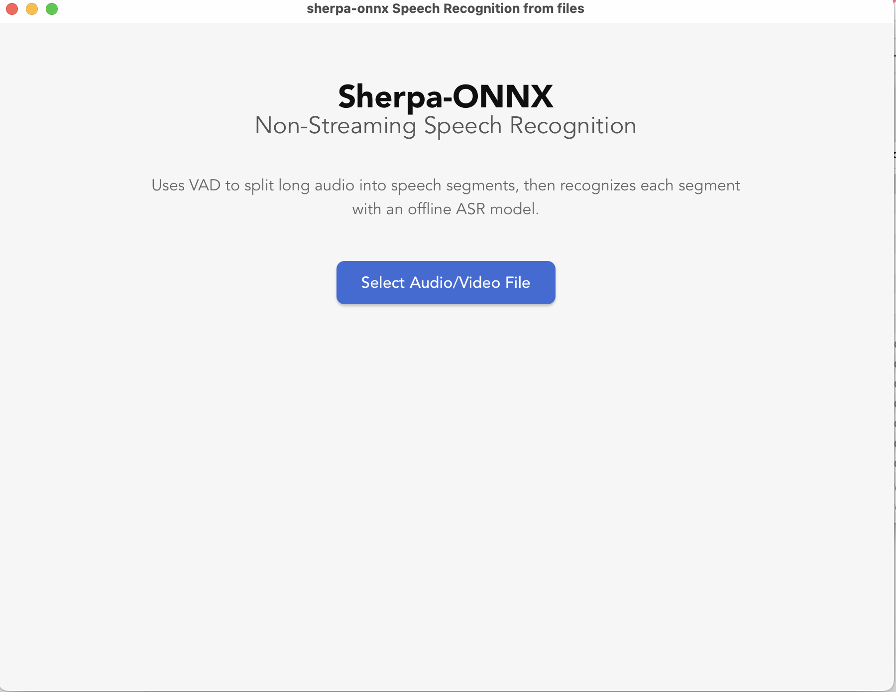
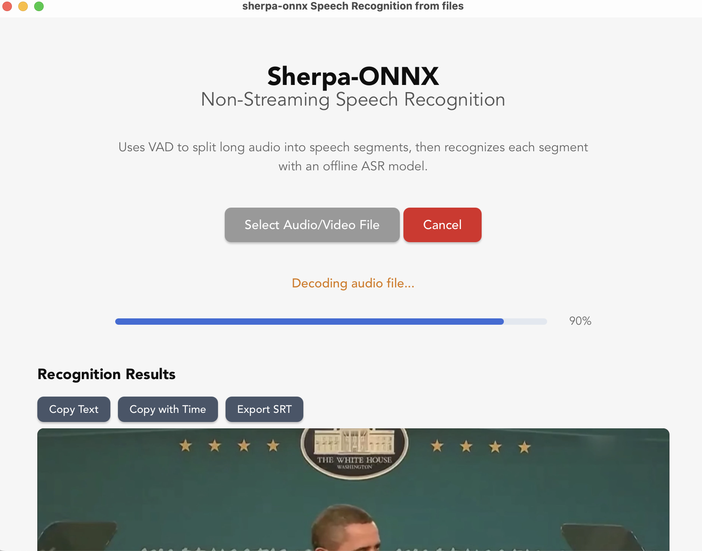
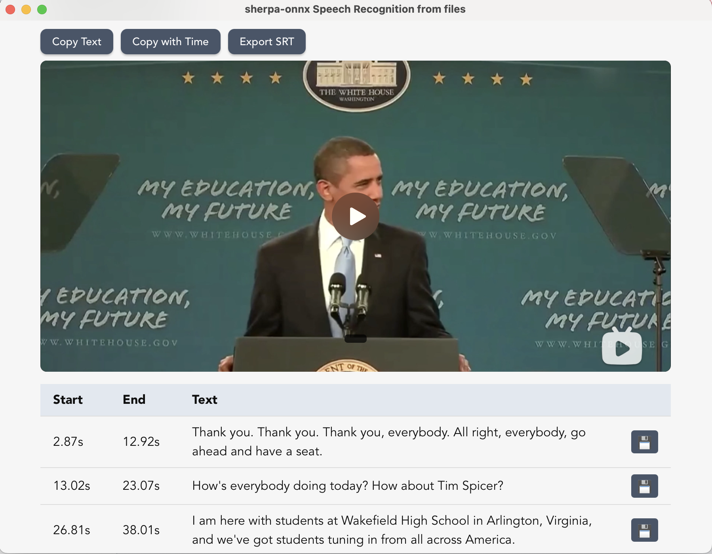
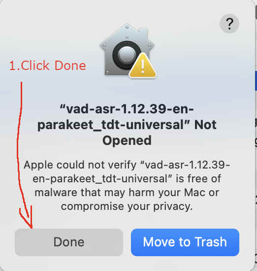
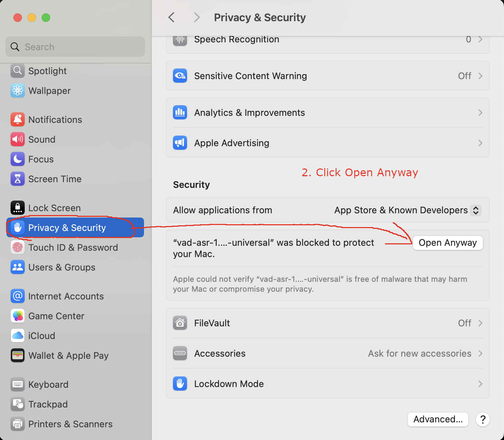
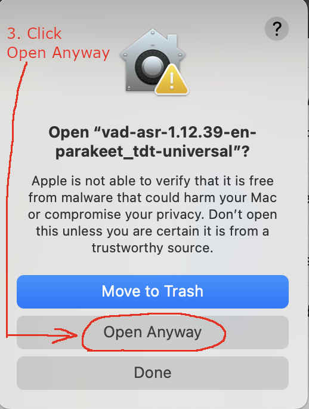
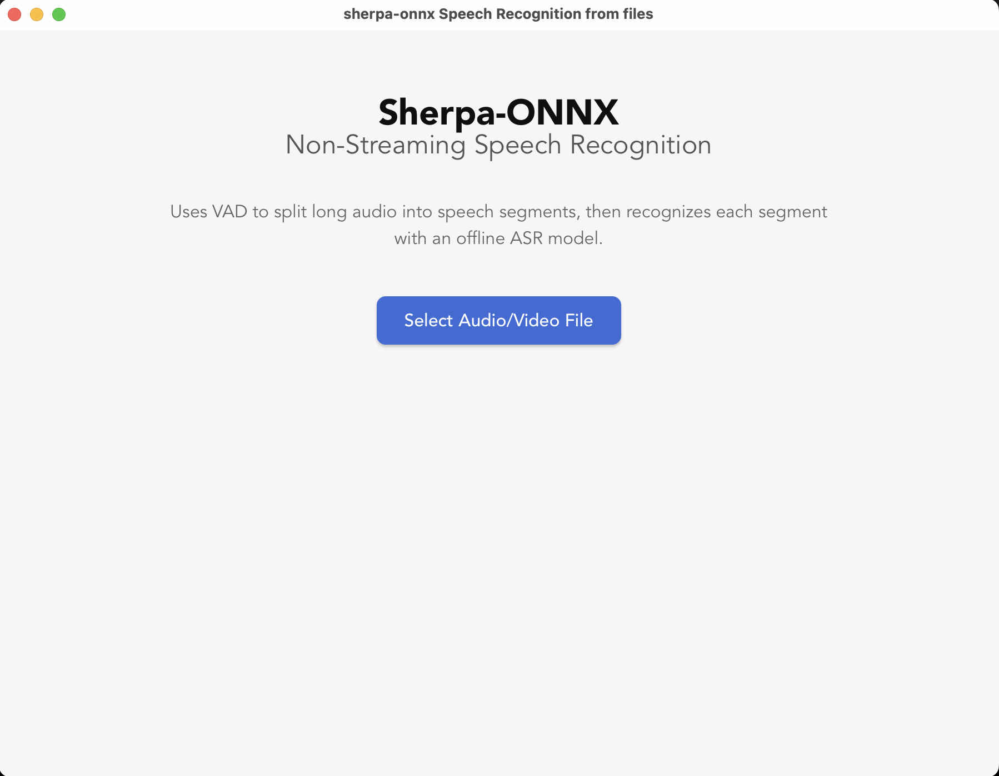

Pre-built Tauri Apps
Links for pre-built Apps can be found in the following tables.
Hint
It runs locally, without internet connection.
Non-Streaming Speech Recognition from File
Hint
You can use it to generate subtitles for Audio and Video files.
Hint
The code is available at
Chinese users |
URL |
|
All platforms |
Hint
The pre-built APPs support Linux (x64, aarch64), macOS (x64, arm64), and Windows (x64).
You can use the following files to test the APPs:
Chinese audio: lei-jun-test.wav
Chinese video: lei-jun-test.mov
English audio: Obama.wav
English video: Obama.mov
Screenshots
 |
 |
 |
{kind=link}
{kind=link}
{kind=link}
Video demo
Notes for macOS users
After double click the app, if you get the following dialog:

Fig. 124 Step 1: Click
Done.
{kind=link}
Please click Done. And then start your Settings, click Privacy & Security, and then click
Open Anyway, as shown below:

Fig. 125 Step 2: Click
Open Anyway.
{kind=link}
It will pop a new window, click Open Anyway, as shown below:

Fig. 126 Step 3: Click
Open Anyway.
{kind=link}
Click Open Anyway and enter your password. You should see the following screenshot:

Fig. 127 Step 4: Started
{kind=link}
Non-Streaming Speech Recognition from Microphone
Hint
You can use it for live microphone transcription with wall-clock timestamps, recording playback, SRT export, and segment WAV export.
Hint
The code is available at
Chinese users |
URL |
|
All platforms |
Hint
The pre-built APPs support Linux (x64, aarch64), macOS (x64, arm64), and Windows (x64).
The macOS notes above apply to this app as well.